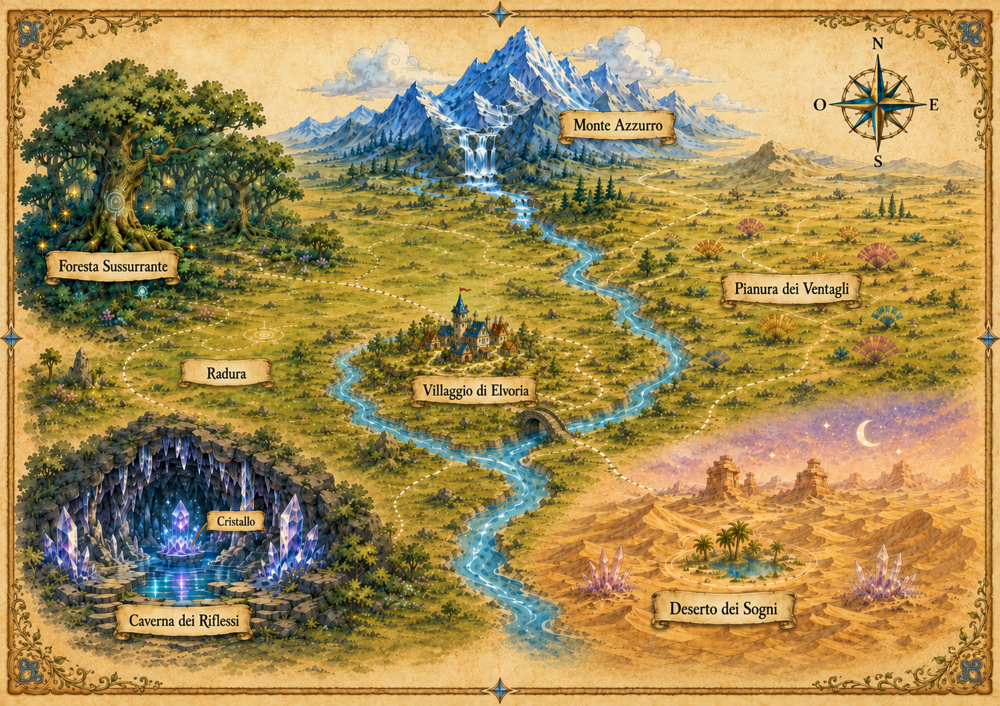

Il viaggio continua oltre l'ultima pagina.
Complimenti! Sei arrivato alla fine della storia ed hai scansionato il QR Code per esplorare i suoi contenuti speciali. Da qui puoi accedere alle tavole illustrate e percorrere anche tu il tuo cammino verso il Cristallo della Verità da protagonsita, in un susseguirsi di bivi che non sono mai stati raccontati.
Non ci sono risposte giuste o sbagliate: ogni scelta ti porta comunque fino alla fine. Il percorso è sempre lo stesso — le prove che incontrerai cambiano a ogni viaggio.
